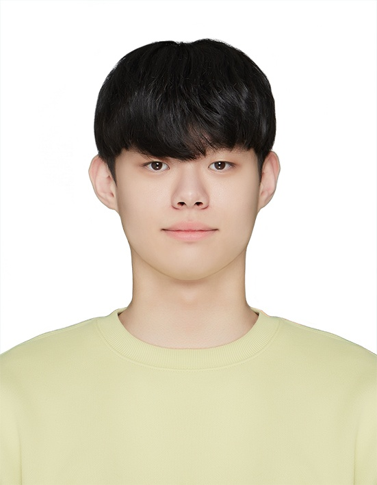

Researcher, Surgery · Seoul National University Bundang Hospital
B.S. Computer Science, Soongsil University
Email: junghungi@kakao.com
I am a Medical AI researcher at the Department of Surgery, Seoul National University Bundang Hospital (SNUBH), working with Prof. So Hyun Kang. My research experience spans clinical text, longitudinal EHR data, physiological signals, and medical imaging.
My current research interests center on multimodal AI for healthcare, particularly the integration of heterogeneous clinical data for patient-level prediction and clinically meaningful decision support. I am also interested in clinical machine learning, longitudinal and time-series modeling, clinical NLP and large language models, and explainable AI.